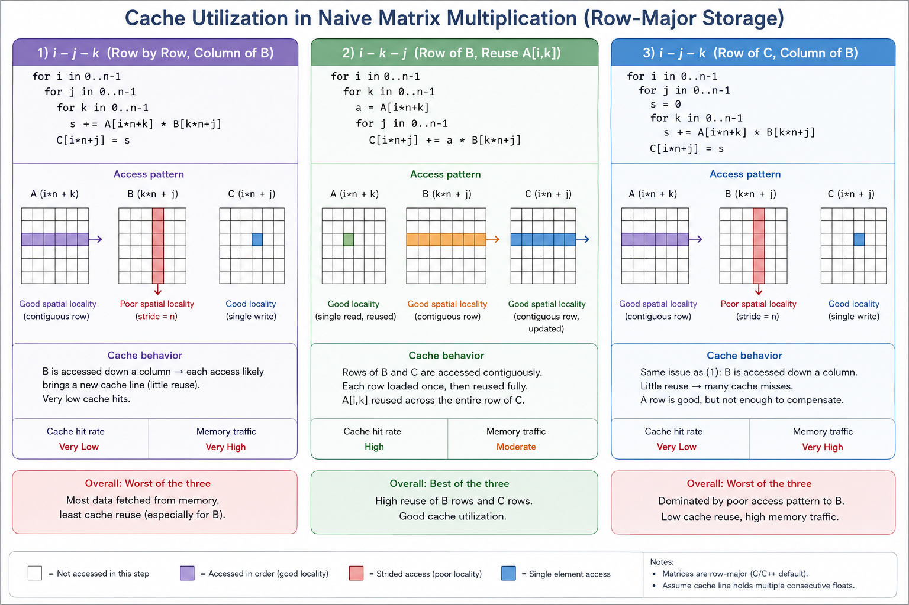

The Memory Hierarchy and the Roofline
Module thesis: modern ML performance is a bandwidth problem wearing a compute problem's clothes.
Demo: The Matmul Ladder
One fixed problem — an N×N FP32 matrix multiplication — solved nine ways, from naive Python to GPU tensor pipes. Only one number changes from rung to rung:
GFLOP/s = 2N³ / time
(2N³ because each of the N² output elements is a dot product of N multiply-adds, and an FMA counts as 2 FLOPs.)
Every rung isolates one hardware fact. By the top of the ladder you'll see that every CPU optimization we write by hand is a software imitation of something the GPU does natively.
Code: code/ai_acceleration/ — every rung prints the same line (name, N, seconds, GFLOP/s, check), and every rung is verified against the same NumPy-computed reference. If an "optimization" breaks the math, the harness says FAIL. Numbers below are from one specific laptop (8-core Zen 3, RX 6700M); yours will differ — the shape of the curve is the lesson, not the numbers.
Naive Python
Code: rung0_python_naive.py
for i in range(N):
for j in range(N):
s = 0.0
for k in range(N):
s += A[i][k] * B[k][j]
C[i][j] = s
- Concept: interpreter overhead. Every
+and*here is a dispatch through the Python object system — type checks, boxing, reference counting — costing hundreds of instructions per floating-point operation. - Result: 0.05 GFLOP/s, run at N=256 because at N=1024 it takes closer to a minute. This is the zero of our scale.
NumPy
Code: rung1_numpy.py
C = A @ B
💬 One line of Python. ~5000× faster than the naive Python version. How?
Answer
@dispatches to a BLAS library (OpenBLAS here) — decades of hand-tuned, blocked, vectorized, multithreaded native code.- 249 GFLOP/s. Everything we're about to build by hand, someone already built — that's what "calling a library" actually means.
Inside one call to A @ B
Call an Optimized Library (BLAS)
A @ BinvokesA.__matmul__(B)in Python.- NumPy validates the inputs (shape, dtype) and dispatches the entire operation to a compiled routine (
sgemm). - After dispatch, the Python interpreter is no longer involved.
- Key idea: interpreter overhead is paid once per matrix multiplication, instead of once per arithmetic operation.
Dispatch: handing a high-level operation to an optimized native implementation.
BLAS: A Standard Interface
BLAS (Basic Linear Algebra Subprograms, 1979) defines a standard API for linear algebra routines.
| Level | Operation | Example |
|---|---|---|
| Level 1 | Vector–Vector | Dot product |
| Level 2 | Matrix–Vector | Ax |
| Level 3 | Matrix–Matrix | gemm (sgemm, dgemm) |
- BLAS specifies the interface, not the implementation.
- Any software using BLAS (NumPy, PyTorch, MATLAB, R, Fortran, etc.) automatically benefits from faster implementations.
Common implementations
- CPU: OpenBLAS, BLIS, Intel MKL
- GPU: cuBLAS (NVIDIA), rocBLAS (AMD)
OpenBLAS
On this machine, NumPy uses OpenBLAS.
- Detects the CPU at runtime.
- Selects kernels optimized for the detected microarchitecture.
- Core computation is performed by a highly tuned micro-kernel (typically operating on small blocks such as 8×8) that keeps registers and FMA units busy.
Why Is BLAS So Fast?
A modern BLAS implementation combines multiple optimization techniques:
- Native compiled machine code (no interpreter overhead)
- Cache-friendly memory access
- Cache blocking (tiling)
- SIMD vector instructions (8–16 values per instruction)
- Multi-core parallel execution
Key takeaway: High performance comes from combining many well-known optimizations—not a single breakthrough. The remaining rungs of the performance ladder isolate and explain each of these techniques individually.
Naive C
Code: rung2_c_naive.c
Same triple loop, compiled with vectorization disabled so we isolate one idea at a time.
Performance Intuition
Suppose multiplying two numbers takes roughly 1 CPU cycle.
A Python iteration may require hundreds of instructions before reaching that multiplication.
Python:
Interpret → Type Check → Lookup → Multiply → Add → Store
C:
Load → Multiply → Add → Store
Thus, even with the same O(N³) algorithm, C typically achieves 20–100× higher performance than naïve Python for compute-intensive loops.
Cache Utilization
Warm-up — the cache, in one array
Before touching matmul again, a simpler experiment. Sum all elements of one large N×N array, two ways:
for (i) for (j) sum += A[i][j]; // walk along rows
for (j) for (i) sum += A[i][j]; // walk down columns
Same elements, same additions, same Big-O — yet the first is several times faster. With everything else identical, only one explanation is left: the order in which memory is touched.
Why: DRAM doesn't hand the CPU one float — it hands over a cache line of 64 bytes (16 floats) at a time. The row walk uses all 16 before asking for the next line; the column walk uses 1 of the 16, and by the time that column comes around again, the line is long evicted.
The principle — and note it is not "rows good, columns bad":
Access memory in the order it is stored. C stores arrays row-major; Fortran and MATLAB store column-major, and there the opposite loop wins. The lesson is locality, not rows.
Loop reorder (i-k-j)
Code: rung3_c_reorder.c
Now apply the warm-up to the naive C inner loop, s += A[i*n+k] * B[k*n+j]:
💬 As k counts up, which operand walks along a row, and which walks down a column?
Answer
A[i*n+k]— walks a row ✔B[k*n+j]— walks a column ✘: jumps n floats per step, one wasted cache line per access. The warm-up's slow case, hiding inside matmul.
Reordering the loops to i-k-j fixes it — the inner loop (now over j) walks both B and C along rows:
for (int i = 0; i < n; i++)
for (int k = 0; k < n; k++) {
float a = A[i*n+k];
for (int j = 0; j < n; j++)
C[i*n+j] += a * B[k*n+j];
}

- Result: ~9× faster (0.37 → 3.48 GFLOP/s) — same arithmetic, same instruction count, same flags.
- The cache agrees, measurably:
cachegrindreports a 49.9% L1 miss rate for i-j-k vs 2.1% for i-k-j — one miss per element vs one miss per 16-float cache line. - Matmul adds one thing the warm-up couldn't show:
a = A[i*n+k]is loaded once and reused across a whole row ofC— temporal locality (reuse before eviction) on top of spatial. Tiling, later in the ladder, takes temporal locality further. - Concept: memory access order. Nothing about the computation changed — only the order in which memory is touched. Say it once and remember it all term: this was never a compute problem; it's a memory problem.
- The GPU version of this exact fact is called memory coalescing — we'll meet it soon.
🔬 Verify it yourself — watch the cache misses directly
Don't take the explanation on faith; the CPU has hardware counters that count cache misses, and perf reads them.
Cache simulation (cachegrind), no sudo needed. Valgrind simulates the cache instead of reading counters (~50× slower, hence single rep):
cd code/ai_acceleration
for b in rung2_c_naive rung3_c_reorder; do echo "== $b =="; valgrind --tool=cachegrind --cache-sim=yes ./build/$b 1024 1 2>&1 | grep -E "D refs|D1 miss|LLd miss"; done
Reading the output. Cachegrind simulates a first-level data cache (D1, your L1d) and a last-level cache (LL, your L3) — the simulated sizes are printed in the run's header lines. Each access is checked top-down: miss L1 → go to L3; miss L3 → go to DRAM.
| Output line | Meaning |
|---|---|
==NNNNN== |
Just the process ID valgrind prefixes to its output |
D refs |
Total data accesses, split rd (reads) + wr (writes) |
D1 misses |
Accesses that missed L1 and had to reach L3 |
LLd misses |
Data accesses that missed L3 too — the DRAM trips (d = the data share; instruction fetches are LLi) |
D1 / LLd miss rate |
The misses above ÷ D refs, per category |
Two decodings worth showing off: the naive run's 50.0% read miss rate is literal — the inner loop makes exactly two reads per iteration, A[i*n+k] (row walk, hits) and B[k*n+j] (column walk, misses): one of two = 50%. And LLd misses ≈ 198k reads ≈ the three matrices' 12 MB ÷ 64-byte lines — pure cold misses, each line's unavoidable first touch, after which everything lives in L3.
What to expect (cachegrind, N=1024):
| i-j-k (naive) | i-k-j (reordered) | |
|---|---|---|
| L1-d misses | ~1.08 billion | ~67 million |
| L1-d miss rate | ~50% | ~2% |
| Last-level misses | ~264k | ~264k |
Three checks worth doing against theory:
- N³ = 1,073,741,824 — the naive version misses almost once per
Baccess. - 67M ≈ N³/16 — the reordered version misses once per 16-float cache line, exactly as the warm-up predicted.
- Last-level misses are identical — both versions move the same data through DRAM at this size. The entire 9× win is L1 locality, a fact the GFLOP/s number alone could never tell you.
(Caution: cachegrind's own timing is meaningless — simulation overhead flattens the difference. Use the harness for time, cachegrind for why.)
SIMD
Code: rung4_c_simd.c — same source as the loop-reorder step; the change is compiler flags (-O3 -march=native -ffast-math)
The flags don't change the algorithm — they change how aggressively the compiler is allowed to translate it into machine instructions:
| Flag | What it allows | Trade-off | Impact here |
|---|---|---|---|
-O3 |
Every generally-safe optimization: inlining, dead-code removal, auto-vectorization | Longer compiles | ★★★★★ |
-march=native |
Instructions specific to this CPU: AVX2 vectors, FMA (a*b+c in one instruction) instead of generic x86-64 |
Binary may not run on older CPUs | ★★★★ |
-ffast-math |
Reordering float math — IEEE-754 forbids the compiler from rewriting (a+b)+c as a+(b+c), since float addition isn't associative; this waives that, unlocking vectorized reductions and FMA fusion |
Results differ in the last bits; fine for ML/graphics, wrong for finance or reproducible science | ★★★ |
-funroll-loops |
Duplicating loop bodies — fewer branch/compare instructions, more room to schedule | Bigger binary; -O3 already unrolls hot loops selectively |
★★ |
-Wall |
Warnings (uninitialized vars, etc.) | None — zero performance effect, just good hygiene | — |
- Concept: data parallelism in one core. The compiler turns the inner loop into AVX2 instructions: one instruction, 8 float lanes. A preview of SIMT — think of it as a warp with 8 lanes and no scheduler.
- Result at N=1024: 31.5 GFLOP/s.
💬 Same binary, N=2048 instead of 1024. Predict the GFLOP/s.
Answer
- It collapses: 14.2 GFLOP/s — half the throughput, same code.
- At N=1024, matrix B is 4 MB and fits in the 16 MB L3 cache. At N=2048 it's 16 MB — it no longer fits, and every pass over B streams from DRAM.
- SIMD raised the compute roof ~8× — high enough that we slammed into the memory wall. The bottleneck moved.
Tiling
Code: rung5_c_tiled.c
Process the matrices in T×T blocks so the working set stays in cache:
- Concept: arithmetic intensity — FLOPs per byte moved. A T×T tile loads 3T² floats but performs 2T³ FLOPs: reuse scales with T. Tiling doesn't reduce the arithmetic; it reduces traffic to slow memory.
- Result at N=2048: 30.8 GFLOP/s — the N=1024 speed, recovered.
- Note the ordering of the ladder: tiling after SIMD. At pre-SIMD scalar speeds the code was compute-bound and tiling did nothing (try it — one
makeaway). Optimizations only pay when they attack the current bottleneck — that is the roofline model in one sentence. - The GPU version of this is shared-memory tiling — and there it's manual, because the GPU has no big automatic cache to hope for.
- Bonus lesson hiding in this file: an innocent
&& j < nbounds check in the hot loop silently disables vectorization and costs 3×. Details in the code comments.
All cores
Code: rung6_c_openmp.c — one #pragma omp parallel for on the outer tile loop
- Concept: thread parallelism. Independent tiles of C can be computed by different cores — no coordination needed, because matmul's outputs don't depend on each other.
- Result: 106 GFLOP/s on 8 cores. Within ~2× of NumPy's BLAS — we have essentially reconstructed a real library.
💬 lscpu says 16 CPUs, yet the speedup over one core is only ~5×. Where did the other 11 go?
Answer
- 8 of the 16 were never cores. This chip has 8 physical cores × 2 SMT threads ("hyperthreads"). Each pair of threads shares one core's FMA units — and a dense matmul already keeps those pipes full with one thread, so the second adds ~nothing. What the OS advertises (logical CPUs) and what the silicon has (FPUs) are different numbers. Honest ceiling: 8×.
- All-core clock < single-core boost. One busy core turbos to ~4.6 GHz; eight busy cores share the same power/thermal budget and settle near ~3.5 GHz. Each core is ~20% slower than the single core was. The power budget is a shared resource.
- L3 and DRAM bandwidth are shared too. One core had 16 MB of L3 to itself; eight get 2 MB each, and all their misses queue at one memory controller. Compute ×8, bytes/second ×1.
- Measure it: sweep
OMP_NUM_THREADS=1,2,4,8(pinned:OMP_PLACES=cores). Scaling is ~1.9× at 2 threads, sagging by 4, rolled over by 8 — the signature of shared-resource contention. We bought 8× the arithmetic and 1× the memory — and got 5×.
- This is the CPU ceiling. Every remaining gain needs more cores — and cores multiply neither the memory bandwidth nor the power budget they must share.
GPU
Code: rung7_gpu.py
C_g = A_g @ B_g # torch, device='cuda'
Before the real number, two measurement traps — both runnable (--no-sync, --time-transfer):
💬 Trap 1: we time the matmul and get 314 microseconds — an implied 55 TFLOP/s on a GPU whose spec sheet says 10.6 TFLOP/s peak. What did we actually measure?
Answer
- Nothing real: a kernel launch is an asynchronous enqueue. Without
torch.cuda.synchronize(), the stopwatch stops when the work is queued, not when it's done. - A GPU "beating" its own theoretical peak is the tell. Always synchronize before and after the timed region.
💬 Trap 2: timed correctly, the matmul hits 9,022 GFLOP/s. Include the .to('cuda') copy inside the timing and it drops to 2,553. Why?
Answer
- The data crossed PCIe to reach the GPU, and PCIe bandwidth is a tiny fraction of the GPU's own memory bandwidth.
- Compute is only worth shipping to the GPU if the data lives there long enough to amortize the trip — this constraint shapes the design of every training and serving system we'll see.
- Concept: throughput hardware. Timed honestly: 9,022 GFLOP/s — ~85× the 8-core CPU ceiling, on a laptop GPU.
Lower precision
Code: rung8_lowprec.py
- Concept: precision as a performance knob. FP16 halves the bytes per number — half the memory traffic, and on most GPUs a faster arithmetic path too.
- Result: 15,546 GFLOP/s — 1.7× over FP32, from a one-line change and no accuracy check failure at this size.
- On NVIDIA GPUs with tensor cores, enabling TF32 reroutes even "FP32" matmuls through dedicated matrix units for a several-fold jump. That hardware — and when lower precision is not free — is the next lecture.
The mapping table
The ladder, summarized. Every CPU technique we wrote by hand is an approximation of something the GPU does natively:
| CPU technique we wrote | GPU equivalent | Why the GPU wins |
|---|---|---|
| Loop reorder for locality | Memory coalescing | 32 lanes' addresses merge into few transactions |
| Cache blocking (tile T) | Shared-memory tiling | Scratchpad is explicit, not hoped-for |
| SIMD, 8 lanes | SIMT warp, 32 lanes | Wider, plus per-lane addressing freedom |
| OpenMP, ~8–64 threads | ~100k threads resident | Latency hidden by oversubscription, not caches |
| Prefetch + out-of-order to hide DRAM | Warp scheduler switch | Switching is free: registers never spill |
| — | Tensor cores | A matrix block as a single instruction |
The closing line: the GPU isn't "faster" — it's a machine built for exactly this loop.
Run it yourself
git clone git@github.com:Ankush-Chander/DS635-ml-system-engineering.git
cd DS635-ml-system-engineering/code/ai_acceleration
make data && make && make bench && make chart
The README has per-machine notes (AMD GPUs, device pinning) and the lab exercises: reproduce the ladder on your machine, sweep the tile size to find your cache's sweet spot, and explain both timing traps in your own words. Your curve will differ from the one in class — explaining every difference is the point.
References
- Vijay Janapa Reddi, Machine Learning Systems — Ch 11: AI Acceleration (§§ 11.4, 11.7)
- Samuel Williams et al., Roofline: An Insightful Visual Performance Model (CACM 2009)
- How to Tile Matrix Multiplication
- Matrix Multiplication: Tiling & Cache Visualization